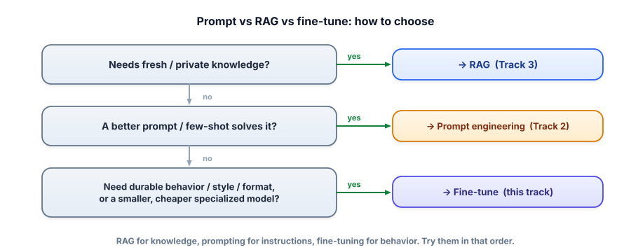

Prompt vs RAG vs fine-tune
Fine-tuning sounds like the “serious” option, so people reach for it first — and usually shouldn’t. Knowing exactly when fine-tuning is the right tool (and when prompting or RAG wins) is one of the clearest markers of an experienced GenAI engineer. Let’s build that judgment before we build a model.
Three ways to change what a model does
You now have three levers. Prompting (Track 2) changes the input — instant, free, great for instructions and one-offs. RAG (Track 3) changes the input too, by injecting retrieved knowledge — perfect for facts that are large, private, or changing. Fine-tuning changes the weights — you continue training the model on your examples so a behavior becomes baked in. Each is the right answer to a different question.
Fine-tuning is further training a pretrained model on your own examples, updating its weights so it reliably produces a desired behavior — a format, a style, a tone, or strong performance on a narrow task. Unlike prompting and RAG (which change the input at run time), fine-tuning changes the model itself, once, ahead of time.
Think of a new cook in a restaurant. A prompt is the order slip ('no onions, extra spicy'): it changes this one dish. RAG is handing them the recipe book so they can look things up. Fine-tuning is sending them to cooking school for a month so the house style becomes habit. You don't send someone to school because today's menu changed. The analogy breaks because a trained cook can still read new recipes perfectly well, while a fine-tuned model can quietly get worse at things it used to do well, so you test it after training.

What fine-tuning is (and isn’t) for
| Fine-tune when you want… | Don’t fine-tune for… |
|---|---|
| A consistent format/style/tone hard to get with prompting alone | Fresh or changing facts → that’s RAG (re-index, don’t retrain) |
| Reliable performance on a narrow, repeated task | A one-off task a good prompt already handles |
| A smaller/cheaper/faster model to match a big one on your task | Adding private documents as knowledge → that’s RAG |
| To shrink your prompt (bake in instructions/examples you currently pay for every call) | When you haven’t tried prompting + RAG yet |
Should you fine-tune?
Answer three questions; get a recommendation with the reasoning.
These aren’t mutually exclusive. A common production stack is fine-tune + RAG: fine-tune the model to follow your format and tone reliably, and use RAG to feed it current facts. Fine-tuning fixes how it answers; RAG supplies what it knows. Reach for both when you need both.
Assumptions: a ticket-classification service makes 3,000,000 calls a month. Every call carries a 2,000-token block of fixed instructions and 8 examples, plus about 300 tokens of ticket text. Prices: claude-sonnet-5-5 at $2 per million input tokens; prompt-cache reads cost 5% of the base input price on Sonnet 5.5 (Claude models overview).
- Today. 3,000,000 x 2,000 = 6 billion fixed tokens a month. 6,000 x $2 = $12,000 a month for the fixed block.
- Option A: prompt caching. The fixed block is identical on every call, so it can be cached. Cache reads at 5% = $0.10 per million: 6,000 x $0.10 = $600 a month (plus cache writes, ignored here). No training, no new model to maintain, and reversible in an afternoon.
- Option B: fine-tune a small open model to do the classification with no fixed block. You need a curated dataset (the hard part: say 3,000 labelled tickets at 2 minutes each = 100 hours of expert time), training runs, an eval to prove it matches, hosting, and a re-tune every time the base model or the label set changes.
- Compare. Caching takes the $12,000 to about $600. Fine-tuning has to beat $600 a month after its people and hosting costs. For most teams it doesn't.
- When the answer flips. Fine-tuning wins if you need much lower latency or cost than any hosted model gives, must run on-prem, or the behaviour is something prompting can't hit reliably even with examples, measured on an eval, not assumed.
Research backs the knowledge side too: Ovadia et al. found RAG consistently beat unsupervised fine-tuning for injecting knowledge, both old and new (arXiv 2312.05934).
- Prompting & RAG change the input; fine-tuning changes the weights.
- RAG for knowledge, prompting for instructions, fine-tuning for behavior — try them in that order.
- Fine-tune for consistent format/style/tone, narrow repeated tasks, or a smaller cheaper model.
- Don’t fine-tune for fresh/changing facts (RAG) or one-offs (prompt).
- Fine-tuning and RAG often combine: behavior from fine-tuning, knowledge from RAG.
A bank wants an assistant that (a) always answers in a strict, compliant format and tone, and (b) uses the latest, frequently-updated policy documents. Best approach?
Your model needs your company's current prices, which change weekly. Best approach?
Which of these is the weakest reason to fine-tune?
Your team wants to fine-tune because 'the model sometimes ignores our tone guidelines'. You haven't built an eval yet. What's the right first step?
1. For each, pick prompt / RAG / fine-tune (or a combo): (a) answer support questions from our docs, (b) always output our exact JSON ticket schema, (c) write in our brand’s quirky voice, (d) summarize a pasted email.
2. Your prompt is 2,000 tokens of instructions + 8 examples, sent on every call, and it’s getting expensive. How might fine-tuning help?
3. Why is “fine-tune it on our knowledge base” usually the wrong instinct?
▸ Show solutions & reasoning
1. (a) RAG — knowledge from docs. (b) fine-tune (or strong prompt + JSON mode) — a durable format behavior. (c) fine-tune — a consistent style. (d) prompt — a one-off transformation of provided text. Notice (b) and (c) are behaviors, (a) is knowledge, (d) is an instruction — matching the three-tool map.
2. If those instructions and examples are baked into the weights by fine-tuning, you can drop most of them from the prompt — the model already behaves that way. You pay a one-time training cost to stop paying 2,000+ tokens on every single call, which at volume can be a large, ongoing saving in cost and latency. Fine-tuning to shrink the prompt is an underrated, very practical use.
3. Because knowledge bases change, and weights are expensive and slow to update — you’d be retraining constantly, and the model still couldn’t cite sources or guarantee it isn’t blending facts. Worse, fine-tuning on documents teaches style more than reliable recall; models don’t store facts as crisply as a retriever does. For knowledge, retrieval is both cheaper and more trustworthy. Fine-tune behavior; retrieve knowledge.
Fine-tuning carries costs prompting and RAG don’t: you need a curated dataset (the hard part), compute to train, an evaluation to prove it helped, and a pipeline to version and deploy the result — and every base-model upgrade may mean re-tuning. That’s why the discipline is “prompt and RAG first”: they’re reversible, instant to iterate, and require no training. Fine-tuning earns its cost when a behavior is stable, valuable, and high-volume enough that baking it in pays off — and when you can measure the improvement (Lesson 5.6).
One powerful pattern worth knowing: distillation. You use a large, expensive model to generate high-quality examples for your task, then fine-tune a small, cheap model on those examples — “teaching” the small model to imitate the big one on your narrow task. Done well, you get most of the big model’s quality at a fraction of the cost and latency, which is exactly the “smaller/cheaper specialized model” cell in the table.
It’s how many teams turn an expensive prototype into an affordable production model. But notice it still obeys the rule: you’re fine-tuning for behavior (match the teacher on this task), not stuffing in changing facts. Keep the map in your head and the right tool is almost always obvious.
labs/02_structured_output.pyFree and offline once set up: Ollama with qwen2.5:7b, plus the packages in labs/README.md. From the course folder:
python labs/02_structured_output.pyWhat to look for: Before fine-tuning for format, see how far constrained decoding gets you: compare the parse-failure rate of free-text prompting against the schema-constrained run over the batch of messy emails. If constrained output already hits near-zero failures, 'fine-tune for JSON format' is solved without training. Change the schema and watch the result update instantly, which a fine-tune can't do.
▸ Recorded output (our run, 2026-11-03, qwen2.5:7b on a laptop GPU)
#5: valid {'category': 'refund', 'order_id': 'ORD-90011', 'urgency': 'high', 'summary': 'Refund for ORD-90011, 3 weeks overdue'}
#6: valid {'category': 'delivery', 'order_id': 'ORD-31337', 'urgency': 'medium', 'summary': 'Request to change delivery address before shipment'}
#7: valid {'category': 'refund', 'order_id': None, 'urgency': 'high', 'summary': 'Cancel subscription, refund last month'}
C) Schema-valid is not business-valid: validate rules, retry with the error
rule violations repaired by retry: 0
D) Content check against gold labels (shape-valid does not mean right)
#4: model said 'delivery', a human would file 'other': 'Just wanted to say the delivery guy was very polite. thanks!'
category accuracy: 7/8
Summary
vague-prompt valid: 0/4
prompt-only valid: 8/8
schema-constrained valid: 8/8
Look: constrained decoding guarantees the SHAPE. It does not guarantee the CONTENT is right;
that is what the business-rule check + retry (and your eval set) are for.Your numbers will differ a little run to run. Full log: labs/outputs. Source: labs/02_structured_output.py.
Warm-up. For each, pick prompt, RAG, fine-tune, or 'none of these': (a) answer HR policy questions where policies change quarterly; (b) make outputs valid JSON for a fixed schema; (c) run a classifier on a factory floor with no internet; (d) stop the model inventing citations.
▸ Solution
(a) RAG: changing knowledge, re-index on change. (b) Prompt plus constrained decoding (structured outputs) first; fine-tune only if that measurably fails. (c) Fine-tune a small open model (often by distillation), since it must run offline. (d) None alone: RAG with citation checking in code, and refusal when retrieval is weak. Fine-tuning won't stop invention; it can make it more fluent.
Transfer. A stakeholder says 'Fine-tune it on our 40,000 Confluence pages so it knows our company.' Write the reply you'd send, with the alternative.
▸ Solution
Fine-tuning mostly changes how the model answers, not what it reliably knows. Training on 40,000 pages would give us a model that sounds like our wiki but still makes up details, can't say which page it used, and is out of date the day a page changes. The published comparison (Ovadia et al., arXiv 2312.05934) found retrieval beat fine-tuning for injecting knowledge. Proposal: RAG over Confluence with permissions-aware retrieval and citations, an eval of 200 real employee questions, and a fine-tune later only if we find a stable behaviour (tone, format) that prompting can't fix.
Stretch. Write a one-page decision rule your team can apply before any fine-tuning project. Include the questions and the evidence required at each gate.
▸ Solution
Gate 1, problem type: is it knowledge (use RAG), instructions (prompt), or behaviour (continue)? Gate 2, eval exists: 100+ held-out real cases with a metric and a current baseline. Gate 3, cheap levers tried: better prompt, few-shot, constrained decoding, a stronger model, prompt caching for cost; record each result. Gate 4, the gap is measured and worth closing: quantify it in quality, latency or cost per month. Gate 5, data exists: at least a few hundred clean, consistent input-output examples, with rights to use them. Gate 6, ownership: who re-tunes when the base model or data changes, and how it will be served. Fail any gate and you don't fine-tune yet.
Junior When would you fine-tune instead of using RAG?
▸ Model answer
When the problem is behaviour, not knowledge. Fine-tuning is good for a consistent format or style that prompting can't hold, strong performance on a narrow repeated task, or getting a small cheap model to match a big one (distillation). RAG is for facts, especially private or changing ones, because you can update the index and cite sources. Often you need both: fine-tune for how it answers, RAG for what it knows. And I only fine-tune after an eval shows prompting, constrained decoding and a stronger model still fall short.
Mid Your manager asks for a fine-tuned model to cut inference costs. What do you check first?
▸ Model answer
Where the cost actually comes from. If it's a big fixed system prompt, prompt caching may cut it by around 90% or more with no training. If it's output length, prompt for shorter outputs. If it's the model tier, test whether a cheaper hosted model already passes the eval. Batch APIs help for offline jobs. Only if those don't get us there would I look at distilling into a small self-hosted model, and then the comparison must include data labelling, training runs, GPU hosting, on-call and re-tuning, not just per-token price.
Senior Make the case against a fine-tuning project that a team is excited about.
▸ Model answer
I'd ask what problem it solves that cheaper levers can't, with numbers from an eval. Fine-tuning is a long-term commitment: a dataset to maintain, a model to version, a serving stack, and a re-tune whenever the base model improves, which happens every few months. A fine-tune of last year's model can lose to this year's base model with a good prompt. It can also cause forgetting outside the target task, and it's a bad way to add knowledge. If the team can show a measured behaviour gap, a dataset, an owner and a cost model that still wins after caching and model upgrades, I'm in. Otherwise we ship the prompt-plus-RAG version and revisit in a quarter.
To use fine-tuning well, you need a feel for what “training” actually does to a model. Let’s demystify it — gently, with a runnable toy. Next: how training actually works.